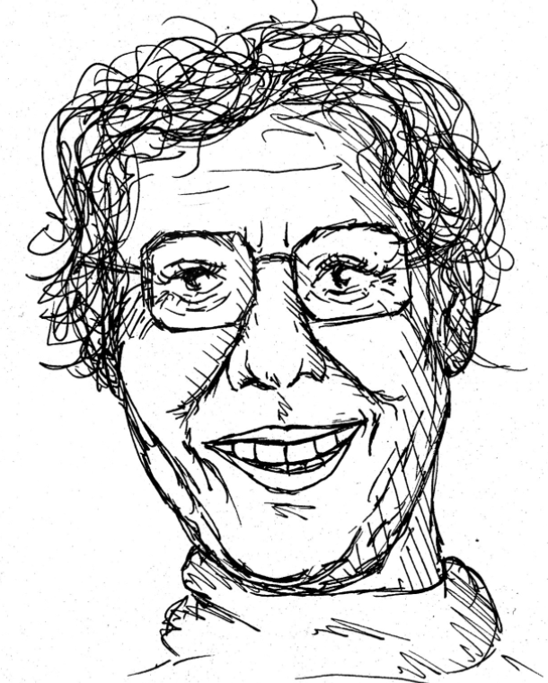

Muriel Cooper
and
MIT Media Lab

Muriel Cooper (1925 – May 26, 1994) was a pioneering book designer, digital designer, researcher, and educator. She was the first design director of the MIT Press, instilling a Bauhaus-influenced design style into its many publications. She moved on to become founder of MIT’s Visible Language Workshop, and later became a co-founder of the MIT Media Lab. In 2007, a New York Times article called her “the design heroine you’ve probably never heard of”.
Muriel Ruth Cooper was born in 1925 in Brookline, an inner suburb of Boston, Massachusetts. She was the middle daughter of three children.
Cooper received her Bachelor of Arts degree from Ohio State in 1944, and a Bachelor of Fine Art in design in 1948 and a Bachelor of Science in education in 1951 from Massachusetts College of Art (MassArt). After her graduation, Cooper moved to New York City and attempted to find a position in advertising. She met Paul Rand, who was influential to her design “way of life”.
In 1967, Cooper returned to a full-time position as Design Director of the MIT Press, having been recommended by Paul Rand. Among many other publications, she designed the classic book Bauhaus (published by MIT Press in 1969, the 50th anniversary of the German design school’s founding). This project dominated her work for nearly two years, to enlarge, revise, and completely redesign an American version of an earlier German edition. She set the book in the newly available Helvetica typeface and used a grid system page layout, giving the book a strong modernist appearance. Cooper also made a film rendition of the book, which attempted to give an accelerated depiction of translating interactive experiences from a computer to paper. This endeavor was her response to the challenge of turning time into space.
As the design director of MIT Press, Cooper promoted the Bauhaus-influenced, modernist look of a large quantity of publications, including 500 books. She designed the first edition of Learning from Las Vegas (1972), the ground-breaking manifesto of Post-Modernist design, using radical variations on the Bauhaus style to produce the publication.A third influential book design was a collection of essays by Herbert Muschamp, titled File Under Architecture (1974). This was one of the first books to be typeset directly on a computer by the book designer. At the time, the only typeface available was monospaced Courier, but she used the capabilities of computer typesetting to achieve a new level of control over the detailed layout of each page.
Muriel Cooper (1925 – May 26, 1994) was a pioneering book designer, digital designer, researcher, and educator. She was the first design director of the MIT Press, instilling a Bauhaus-influenced design style into its many publications. She moved on to become founder of MIT’s Visible Language Workshop, and later became a co-founder of the MIT Media Lab. In 2007, a New York Times article called her “the design heroine you’ve probably never heard of”.
Muriel Ruth Cooper was born in 1925 in Brookline, an inner suburb of Boston, Massachusetts. She was the middle daughter of three children.
Cooper received her Bachelor of Arts degree from Ohio State in 1944, and a Bachelor of Fine Art in design in 1948 and a Bachelor of Science in education in 1951 from Massachusetts College of Art (MassArt). After her graduation, Cooper moved to New York City and attempted to find a position in advertising. She met Paul Rand, who was influential to her design “way of life”.
The official history of the Media Lab by Stewart Brand (The Media Lab: Inventing the Future at MIT, MIT Press, 1989) makes scant reference to this remarkable woman who was, at the time of her death, the only female tenured professor at the lab. Three entries in the index lead to passing mentions but, despite chapter-length discussions of other departments at this latter-day Bauhaus, not one is devoted to the VLW.
And yet, when Cooper showed the latest work of the VLW at the TED 5 conference in February 1994, no less than Bill Gates of Microsoft personally asked for a copy of the presentation. As Nicholas Negroponte, director of the Media Lab comments, “The impact of Muriel’s work can be summed up in two words: Beyond Windows. It will be seen as the turning point in interface design. She has broken the flatland of overlapping opaque rectangles with the idea of a galactic universe.”
“Muriel was a real pioneer of a new design domain,” says Bill Mitchell, dean of MIT’s School of Architecture and Planning. “I think she was the first graphic designer to carry out really profound explorations of the new possibilities of electronic media—things like 3-D text. She didn’t just see computer-graphics technology as a new tool for handling graphic design work. She understood from the beginning that the digital world opened up a whole domain of issues and problems, and she wanted to understand these problems in a rigorous way.”
Professor Muriel Cooper died unexpectedly of an apparent heart attack at the age of 68, on May 26, 1994 at the New England Medical Center in Boston. At the time of her death, she was still active as a full-time professor and was the first and only female tenured professor in the MIT Media Lab.
About a year later, a retrospective exhibition at the Media Lab reviewed her life and career. In 1997, the Design Management Institute established a prize in her name that “honors an individual who, like Muriel herself, challenges our understanding and experience of interactive digital communication”. In 2014, the Arthur Ross Architecture Gallery at Columbia University hosted a retrospective of her work entitled Messages and Means: Muriel Cooper at MIT.
In 2017, MIT Press published a large format, slip cased hardcover book, reviewing Cooper’s career and providing many examples of her design work.
Archives of Muriel Cooper’s work and papers are held at the Morton R. Godine Library at the Massachusetts College of Art and Design, her alma mater.